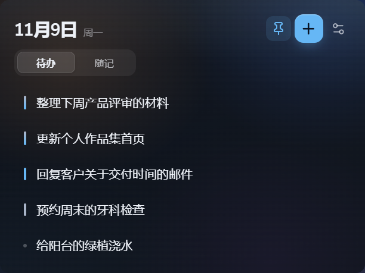

只显示标题
列表保持干净。点击标题，才展开备注；专注模式只留下当前这件事。

安静地待在桌面角落，需要时再展开。
少一点打扰
列表保持干净。点击标题，才展开备注；专注模式只留下当前这件事。
待办之外，也放得下临时念头。关键词可以手动整理，也可以交给 AI。
邮箱验证码登录。同一账号在 Windows 和 macOS 上，看到同一份任务与随记。
现在就能用
单文件便携版。下载后双击运行，不需要安装，也不会在后台注册服务。
首次运行 Windows 可能提示 SmartScreen。应用暂未签名，点「更多信息 → 仍要运行」即可。